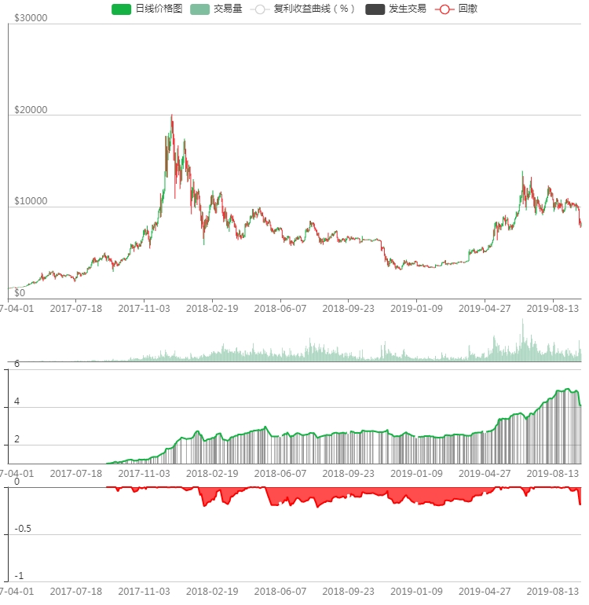

回测日期：2019-8-26
回测交易所：BITMEX
品种：XBTUSD
时间级别：1小时
回测K线数：208652
复利收益曲线：1=初始仓位大小，2表示收益100%，依次类推; 回撤：-1表示亏损100%，爆仓

每次开仓是单位1个BTC
| 全部 | 做多 | 做空 | |
|---|---|---|---|
| 净利润 | $21198.80 | $21198.80 | $0.00 |
| 毛利润 | $32892.80 | $32892.80 | $0.00 |
| 毛亏损 | $-11694.00 | $-11694.00 | $0.00 |
| 最大回撤 | $-1603.50 | $-1603.50 | $0.00 |
| 盈利因子 | 2.812792885240294 | 2.812792885240294 | NaN |
| 最大持仓 | 100.00% | 100.00% | 0.00% |
| 所有已平仓交易 | 356 | 356 | 0 |
| 获利交易次数 | 248 | 248 | 0 |
| 亏损交易次数 | 108 | 108 | 0 |
| 胜率 | 69.66% | 69.66% | NaN% |
| 平均交易 | $59.55 | $59.55 | $NaN |
| 平均盈利交易 | $132.63 | $132.63 | $NaN |
| 平均亏损交易 | $-108.28 | $-108.28 | $NaN |
| 全部交易的平均持仓K线根数 | 137.83988764044943 | 137.83988764044943 | NaN |
| 盈利交易的平均持仓K线根数 | 102.99193548387096 | 102.99193548387096 | NaN |
| 亏损交易的平均持仓K线根数 | 216.37962962962962 | 216.37962962962962 | NaN |